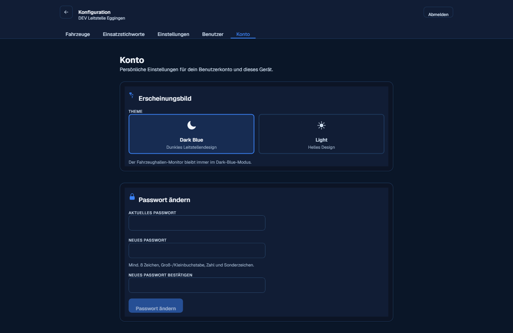
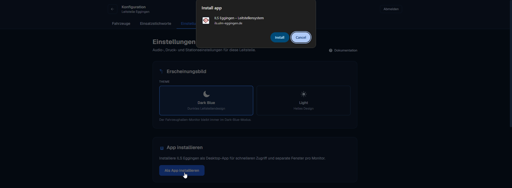

Konto
Persönliche Einstellungen für das eigene Benutzerkonto und dieses Gerät – erreichbar über „Konfiguration“ auf der Monitorauswahl, Tab „Konto“. Anders als die übrigen Konfigurationsbereiche steht dieser Tab jeder Rolle offen, auch Betrachtern.

Erscheinungsbild
Zwischen dem dunklen Standard-Theme „Dark Blue“ und einem hellen Theme „Light“ wählen. Die Einstellung gilt nur für das eigene Konto auf diesem Gerät; der Alarmmonitor im Gerätehaus bleibt davon unberührt immer dunkel.
Passwort ändern
Jede Person kann ihr eigenes Passwort selbst ändern – unabhängig von der Rolle, auch mit einem von einem Admin vergebenen Startpasswort. Dazu aktuelles und neues Passwort eingeben (mind. 8 Zeichen, Groß-/Kleinbuchstabe, Zahl und Sonderzeichen) und bestätigen. Die eigene Sitzung bleibt dabei angemeldet.
Ohne das aktuelle Passwort lässt sich hier nichts ändern. In dem Fall hilft nur ein Admin eurer Leitstelle weiter: Er setzt über Verwaltung → Benutzer → Bearbeiten ein neues Passwort für den Account.
App installieren (Windows)
ILS Eggingen lässt sich als eigenständige Desktop-App installieren – ohne Adressleiste und Tabs, mit eigenem Fenster und Icon in Startmenü und Taskleiste. Das passiert komplett im Browser (Chrome oder Edge); es ist keine separate Installationsdatei nötig und nichts, was ein Admin einmalig für alle einrichtet – jede Person macht das für sich selbst, auf jedem PC einmal.
-
„Als App installieren“ klicken
Im Konto-Tab im Abschnitt „App installieren“ – oder alternativ über das Installieren-Symbol direkt in der Adressleiste des Browsers, falls vorhanden.
-
Im Browser-Dialog bestätigen
Chrome bzw. Edge zeigen einen Dialog mit Name und Adresse der App – mit „Install“ (bzw. „Installieren“) bestätigen.

„Als App installieren“ und der Bestätigungsdialog des Browsers. -
Fertig
ILS Eggingen öffnet sich ab jetzt in einem eigenen Fenster und lässt sich über Startmenü oder Taskleiste starten – praktisch, um z. B. Dashboard und Alarmmonitor als getrennte Fenster auf unterschiedlichen Bildschirmen offen zu haben.